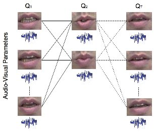
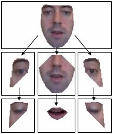
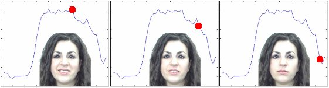
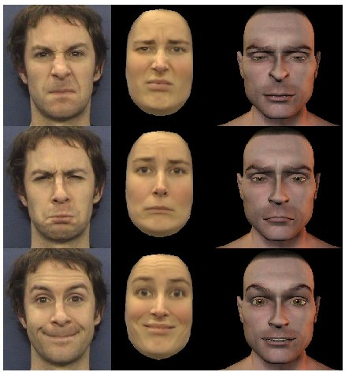

We are working on various aspects of facial analysis/synthesis,
both in 2D and 3D.
Our early work was concerned with driving the facial appearance from
audio input alone, i.e. "talking heads".

The basic flat active appearance model was also modified to use a hierarchy,
which enabled better control of the model.

Our face model has been applied to synthesise
stimuli for psychological experiments.
The images below show how a single parameter of the model
(the current value given by the red dot)
can be used to vary the smile. This was used to determine how the
temporal dynamics affected the perception of a smile as genuine or fake.

In other work we have coupled pairs of models such that
one can drive the other.
Below, the left column shows input video to which one model is fitted.
The estimated model parameters can then transfered to other models
(as shown in the other two columns) so that these faces are animated
to produce expressions in their own characteristic manner.

More details are given in:
return to Paul Rosin's homepage